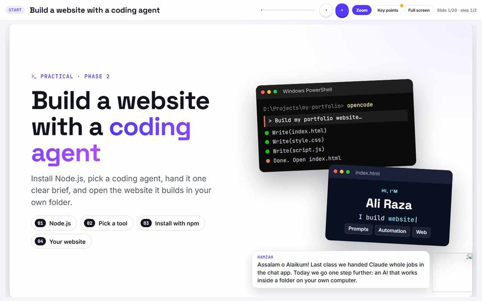
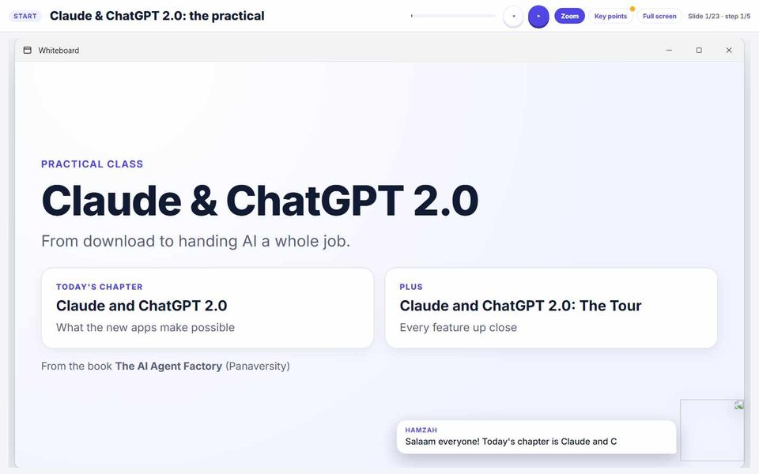

Members only
Batch 91 Portal
Log in to follow each class step by step, track your homework and ask classmates questions. Members only: you need the batch join code from the class WhatsApp group.
Open the Batch 91 PortalMembers only
Log in to follow each class step by step, track your homework and ask classmates questions. Members only: you need the batch join code from the class WhatsApp group.
Open the Batch 91 PortalSunday classes, 18 Oct to 22 Nov 2026. Click a reference to read or open the material taught in that class.
| Date | Covered | Reference material |
|---|---|---|
| Intro to AI, LLMs and agents. Students build their first websites on Lovable. | Slides: Agentic AI Engineering, introductory session | |
| First look at the book, The AI Agent Factory, second edition. | The AI Agent Factory, second edition | |
| Chapter 1: from chatbots to AI workers. | Class Quest: AI Worker Quest, the Chapter 1 game | |
| Chapter 1, continued. | Class Quest: AI Worker Quest, the Chapter 1 game | |
| Chapter 1: The New Way of Working, and coding agents: Claude Code and OpenCode setup. | Claude 2.0 Practical, Chapter 1: The New Way of WorkingClass slides: Claude Code and OpenCode setup | |
| Chapter 2: Tour of the Apps, and the commands you can use in Claude. | Claude 2.0 Practical, Chapter 2: Tour of the Apps |
Two documents explain the course: the main coursebook and the beginner slides from the first class. Three more are what the teachers use in class every week.

Main coursebook
The book the whole course follows. It has one running example, an accounts-payable AI Worker at a small company, a lab in every chapter and a free AI tutor. Pick a reading route: everyday professional (7 to 11 hours), builder, domain expert or leader. New to AI? Read Part 0 first, then Chapter 1, From Chatbots to AI Workers.

For beginners
The first class, in plain language. Part 1 explains what AI is, how LLMs work and why AI can be confidently wrong. Part 2 explains agents (an LLM plus tools plus a loop), when not to hand a job to one, and the 10-80-10 rhythm. It ends with Assignment 1, a one-page explainer.

Chapter 1 game
A game that teaches Chapter 1 in easy words. Eight levels, each hiding a secret code, then a 10-question final quiz. Ranks run from Naya Musafir to AI Ustaad.
Play the Quest
Class 5 slides, 15 Nov
20 slides on moving the AI into a folder on your own computer. Install Node.js, pick Claude Code or OpenCode, install it with npm, then give it one brief and open the website it builds.
Open the slides
Class 5 slides, 15 Nov
23 slides from downloading Claude to handing AI a whole job. Write a brief, let the AI work on your files, check the result. Pick a practice lab: Brightline's payment run or the Big Shaadi payment day.
Open the slidesThe class slides are interactive pages made with Claude. For downloads of the files the admins shared, see Class resources → Links shared in Class.
Four steps, in the order the Batch 91 class takes them. Do the first one today; it costs nothing.
The class works in the Claude Desktop app on Windows, macOS and Linux. The free plan is enough to begin. Download Claude, sign in and ask it something real.
The course teaches one habit: say what you want, let the AI do the heavy lifting, review the result. It is called the 10-80-10 rhythm. Start with Chapter 1 and its lab.
Once chat feels natural, learn coding agents that read files, run commands and finish tasks. Class announced that Claude Code needs a paid Claude plan. The Claude Code docs are the place to start.
Anthropic's Claude Certified Associate exam has 60 questions, runs 120 minutes and passes at 720 out of 1,000. PIAIC runs its own readiness exam first; read the PCAO-F guide.
Batch 91 sits inside PIAIC's Certified Agentic AI Architect programme. PIAIC's notice for the intake covered Batches 71 to 95, Quarter 1 to Quarter 5.
AI-101AI-driven development, Claude Code and OpenClawContributes to Level 1AI-151Context engineering and spec-driven developmentEarns Level 1: Certified Agentic AI FoundationsAI-251Learn to think and program in the AI eraEarns Level 2: Certified Agentic AI DeveloperAI-321Building an AI Agent FactoryEarns Level 3, plus Anthropic's CCA-F examAI-451Deploying Agent Factories in the cloudEarns Level 4: Certified Agentic AI ArchitectCourse details come from piaic.org and the Batch 91 class group, and can change. PIAIC's site is the authority on syllabus, fees and dates.
Two documents built from the Batch 91 group, updated 22 Nov 2026. Open them on any device.
For every student
Every link the class admins shared, with the story behind it from the chat: what to read, what to watch, what to submit. The 16 that matter most are starred.
Open Links shared in ClassMade by the class
The websites students built on Lovable and other platforms. Live previews, a search box, and a score out of 100 for concept, uniqueness, design and usability.
Open the student websites